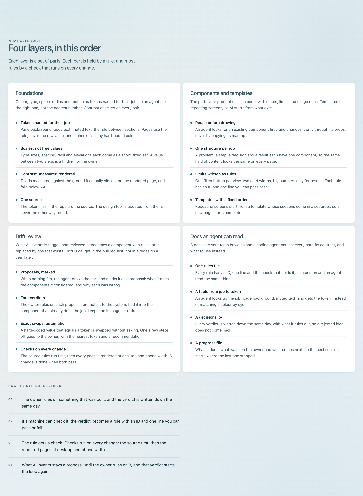
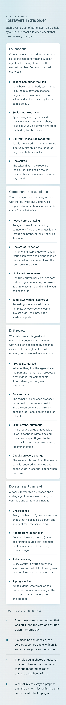

Build page: "Four layers, in this order", deeper
Nayara, 2026-09-27: go deeper on this section, the refinements and rules, and what the parts are. The four cards and their order stay, with their text unchanged. Each card gains a Points list (.ld-list--points) of four parts, a bold lead and one line. Under the cards, a numbered list (.ld-list) shows the loop that refines the system. A lead goes under the heading.
- 22 new lines, all marked
data-new-copy="dsb-layers-*"(CNT-11). No numbers, no prices, no em dashes. - One component proposal (CMP-03), in
components.css: the Points list inside a layer card takes the full card width, the card's body size (15px) and the card's inner rule (--border), no rule under the last part. No new tokens or colours. python3 harness/check.py design-system-build.html: PASS at 1400px and 375px.
Screenshots (reduced motion)


New lines for approval
dsb-layers-lead | Each layer is a set of parts. Each part is held by a rule, and most rules by a check that runs on every change. |
dsb-layers-foundations-1 | Tokens named for their job Page background, body text, muted text, the rule between sections. Pages use the role, never the raw value, and a check fails any hard-coded colour. |
dsb-layers-foundations-2 | Scales, not free values Type sizes, spacing, radii and elevations each come as a short, fixed set. A value between two steps is a finding for the owner. |
dsb-layers-foundations-3 | Contrast, measured rendered Text is measured against the ground it actually sits on, on the rendered page, and fails below AA. |
dsb-layers-foundations-4 | One source The token files in the repo are the source. The design tool is updated from them, never the other way round. |
dsb-layers-components-1 | Reuse before drawing An agent looks for an existing component first, and changes it only through its props, never by copying its markup. |
dsb-layers-components-2 | One structure per job A problem, a step, a decision and a result each have one component, so the same kind of content looks the same on every page. |
dsb-layers-components-3 | Limits written as rules One filled button per view, two card widths, big numbers only for results. Each rule has an ID and one line you can pass or fail. |
dsb-layers-components-4 | Templates with a fixed order Repeating screens start from a template whose sections come in a set order, so a new page starts complete. |
dsb-layers-drift-1 | Proposals, marked When nothing fits, the agent draws the part and marks it as a proposal: what it does, the components it considered, and why each was wrong. |
dsb-layers-drift-2 | Four verdicts The owner rules on each proposal: promote it to the system, fold it into the component that already does the job, keep it on its page, or retire it. |
dsb-layers-drift-3 | Exact swaps, automatic A hard-coded value that equals a token is swapped without asking. One a few steps off goes to the owner, with the nearest token and a recommendation. |
dsb-layers-drift-4 | Checks on every change The source rules run first, then every page is rendered at desktop and phone width. A change is done when both pass. |
dsb-layers-docs-1 | One rules file Every rule has an ID, one line and the check that holds it, so a person and an agent read the same thing. |
dsb-layers-docs-2 | A table from job to token An agent looks up the job (page background, muted text) and gets the token, instead of matching a colour by eye. |
dsb-layers-docs-3 | A decisions log Every verdict is written down the same day, with what it rules out, so a rejected idea does not come back. |
dsb-layers-docs-4 | A progress file What is done, what waits on the owner and what comes next, so the next session starts where the last one stopped. |
dsb-layers-loop-label | How the system is refined |
dsb-layers-loop-1 | The owner rules on something that was built, and the verdict is written down the same day. |
dsb-layers-loop-2 | If a machine can check it, the verdict becomes a rule with an ID and one line you can pass or fail. |
dsb-layers-loop-3 | The rule gets a check. Checks run on every change: the source first, then the rendered pages at desktop and phone width. |
dsb-layers-loop-4 | What AI invents stays a proposal until the owner rules on it, and that verdict starts the loop again. |
Questions for Nayara
- Approve, edit or cut each line above. The layer cards say "the owner": your client's team, or you on the monthly plan. Change to "your team" if you prefer.
- The loop sits under the cards as a numbered list with the label "How the system is refined". Alternative: a separate section after this one, with its own heading.
- The Points list inside cards: promote (joins the system), or keep local to this page.